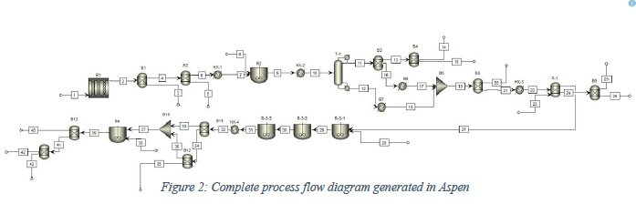

Aspen Plus
Process Simulation
Full mass and energy balances modeled in Aspen Plus — including assumptions, adjustments from the theoretical PFD, and errors encountered during development.
Simulation Basis
Aspen Plus model overview
The Aspen simulation was built from the theoretical PFD (Figure 1 in the report) with iterative adjustments to produce a convergent, product-generating model. Because the simulation was subject to frequent modifications during development, all material balance, energy balance, and economic calculations in the report are based on the theoretical PFD — not the Aspen model — to ensure a stable reference basis.
The final simulation produces approximately 56,355 kg/hr of ε-caprolactam, equivalent to ~544,000 US tons/year — exceeding the target capacity of 500,000 tons/year and confirming process feasibility at industrial scale.

Figure 2: Complete process flow diagram generated in Aspen Plus — includes all reactors, heat exchangers, pumps, separations units, and recycle loops
Model Assumptions
Key assumptions enabling convergence
Vapor-phase phenol feed
Phenol was assumed to enter R-1 as a vapor rather than a liquid, converting the reaction from vapor-liquid to vapor-vapor and enabling stable PFR kinetics in Aspen.
Liquid-phase hydroxylamine
Hydroxylamine sulfate was assumed to be preheated to liquid phase before entering R-2, eliminating the need for a solid conveyor system in the simulation.
Complete S-1 separation
All hydroxylamine sulfate and initial by-products were assumed to be fully separated in the centrifugal phase separator (S-1, stream 12) for simulation simplicity.
Palladium catalyst mass
R-1 was modeled with 35 kg of palladium catalyst at a particle density of 1.2 g/cm³ — consistent with literature values for Pd-on-carbon at this scale.
Unified CSTR kinetics
Due to limited kinetic data in literature for several reactions, the same kinetic parameters were applied to all CSTRs. Accurate per-reactor kinetics is recommended as a next step.
H₂ flow adjustment
Hydrogen feed was adjusted from 2,650 kg/hr (theoretical) to 2,651 kg/hr in the simulation — a minor rounding change to maintain mass balance convergence.
Errors & Learnings
Challenges encountered in Aspen
Negative reactant flow rates in R-3
When the Beckmann rearrangement kinetics were first applied to the CSTRs, Aspen returned negative flow rates for the limiting reactant — physically impossible. The fix was to use kinetic parameters from an already-converging CSTR as the starting point for all reactors in the rearrangement section (R-3-1 through R-3-3), with the same values applied consistently across all three.
Bond structure errors for uncommon compounds
Using Aspen's default bond structure settings for less common species (e.g. hydroxylamine sulfate, cyclohexanone oxime) caused simulation errors. Bond angles were manually calculated in the materials section and molecular structures were redrawn to allow proper thermodynamic calculations.
Distillation column — total vs. partial condenser
T-1 was initially configured as a "total condenser," producing two liquid streams. Since a distillation column should produce a vapor overhead and a liquid bottoms, this was corrected by switching to a "partial condenser" — consistent with physical expectations and resolving the output anomaly.
Oleum chemistry crashing Aspen
Fuming sulfuric acid (oleum) involves H₂SO₄ + SO₃ reacting with water to produce H₃O⁺, which is essential for the Beckmann rearrangement. Loading all these reactions into a single reactor caused Aspen to crash. Distributing them across three CSTRs in series resolved the issue and allowed the simulation to converge and produce target flowrates.
Aspen Stream Data
Table 2 — Aspen-generated stream summary
Complete mass balance data from the Aspen Plus simulation corresponding to Figure 2. All streams at 35 bar unless noted. Flow rates in kg/hr. Abbreviations: ANON = cyclohexanone, CHOX = cyclohexanone oxime, HAS = hydroxylamine sulfate, FSA = fuming sulfuric acid, AS = ammonium sulfate.
| # | Chemical Species | Temp (°C) | P (bar) | Species flow rates (kg/hr) | Total (kg/hr) |
|---|---|---|---|---|---|
| 1 | Phenol, Hydrogen mix | 450 | 35 | Phenol:60,763.0Hydrogen:2,651.0 |
63,413.6 |
| 2 | Phenol, Hydrogen, ANON mix | 924 | 35 | Phenol:19.4Hydrogen:48.6ANON:63,345.6 |
63,413.6 |
| 3 | Phenol | 924 | 35 | Phenol:19.4 |
19.4 |
| 4 | Hydrogen, ANON mix | 924 | 35 | Hydrogen:48.6ANON:63,345.6 |
63,394.1 |
| 5 | Hydrogen | 924 | 35 | Hydrogen:48.6 |
48.6 |
| 6 | ANON | 924 | 35 | ANON:63,345.6 |
64,456.6 |
| 7 | ANON | 85 | 35 | ANON:63,345.6 |
63,345.6 |
| 8 | HAS | 85 | 35 | HAS:51,703.2 |
51,703.2 |
| 9 | ANON, HAS, Water, CHOX mix | 85 | 35 | ANON:0.0HAS:30,384.7Water:11,627.6CHOX:73,036.5 |
115,049.0 |
| 10 | ANON, HAS, Water, CHOX mix | 200 | 35 | ANON:0.0HAS:30,384.7Water:11,627.6CHOX:73,036.5 |
115,049.0 |
| 11 | ANON, HAS, Water, CHOX mix | 227.8 | 35 | ANON:6.1×10⁻⁵HAS:15,552.7Water:5,456.9CHOX:0.1 |
21,009.0 |
| 12 | ANON, HAS, Water, CHOX mix | 259.9 | 35 | ANON:0.0HAS:14,832.0Water:6,170.7CHOX:73,036.4 |
94,039.0 |
| 13 | ANON, Water, CHOX mix | 227.8 | 35 | ANON:6.1×10⁻⁵Water:5,456.9CHOX:0.1 |
5,457.0 |
| 14 | Water | 227.8 | 35 | Water:5,456.9 |
5,456.9 |
| 15 | ANON, CHOX mix | 227.8 | 35 | ANON:6.1×10⁻⁵CHOX:0.1 |
0.1 |
| 16 | HAS | 227.8 | 35 | HAS:15,552.7 |
15,552.7 |
| 17 | HAS | 95 | 35 | HAS:15,552.7 |
15,552.7 |
| 18 | ANON, HAS, Water, CHOX mix | 95 | 35 | ANON:0.0HAS:14,832.0Water:6,170.7CHOX:73,036.4 |
94,039.0 |
| 19 | ANON, HAS, Water, CHOX mix | 87.1 | 35 | ANON:0.0HAS:30,384.7Water:6,170.7CHOX:73,036.4 |
109,592.0 |
| 20 | ANON | 87.1 | 35 | ANON:0.0 |
0.0 |
| 21 | HAS, Water, CHOX mix | 87.1 | 35 | HAS:30,384.7Water:6,170.7CHOX:73,036.4 |
109,592.0 |
| 22 | HAS, Water, CHOX mix | 95 | 35 | HAS:30,384.7Water:6,170.7CHOX:73,036.4 |
109,592.0 |
| 23 | Water | 25 | 35 | Water:57.6 |
57.6 |
| 24 | HAS, Water mix | 94.8 | 35 | HAS:30,384.7Water:6,228.3 |
36,613.0 |
| 25 | Water | 94.8 | 35 | Water:6,228.3 |
6,228.3 |
| 26 | HAS | 94.8 | 35 | HAS:30,384.7 |
30,384.7 |
| 27 | CHOX | 94.8 | 35 | CHOX:73,036.4 |
73,036.4 |
| 28 | Water, SO₃, FSA mix | 25 | 35 | Water:12,100.0SO₃:13,902.3FSA:41,706.9 |
67,709.2 |
| 29 | Water, CHOX, FSA, SO₃ mix | 90 | 35 | Water:8,972.0CHOX:73,036.4FSA:58,737.4SO₃:1.6×10⁻⁹ |
140,746.0 |
| 30 | Water, CHOX, H₃O⁺, FSA, SO₃, HSO₄⁻ mix | 90 | 35 | Water:0.0CHOX:73,036.4H₃O⁺:9,473.5FSA:9,892.5SO₃:1.6×10⁻⁹HSO₄⁻:48,343.1 |
140,746.0 |
| 31 | Water, CHOX, H₃O⁺, H⁺, Caprolactam, FSA, SO₃, HSO₄⁻ mix | 90 | 35 | Water:8,971.8CHOX:16,681.6H₃O⁺:0.0H⁺:501.7Caprolactam:56,354.8FSA:9,892.5SO₃:1.6×10⁻⁹HSO₄⁻:48,343.1 |
140,746.0 |
| 32 | Water, CHOX, H₃O⁺, H⁺, Caprolactam, FSA, SO₃, HSO₄⁻ mix | 100 | 35 | Water:8,971.8CHOX:16,681.6H₃O⁺:0.0H⁺:501.7Caprolactam:56,354.8FSA:9,892.5SO₃:1.6×10⁻⁹HSO₄⁻:48,343.1 |
140,746.0 |
| 33 | Caprolactam | 100 | 35 | Caprolactam:56,354.8 |
56,354.8 |
| 34 | Water, CHOX, H₃O⁺, H⁺, FSA, SO₃, HSO₄⁻ mix | 100 | 35 | Water:8,971.8CHOX:16,681.6H₃O⁺:0.0H⁺:501.7FSA:9,892.5SO₃:1.6×10⁻⁹HSO₄⁻:48,343.1 |
84,390.8 |
| 35 | Water, CHOX, H₃O⁺, H⁺, SO₃, HSO₄⁻ | 100 | 34 | Water:8,971.8CHOX:16,681.6H₃O⁺:0.0H⁺:501.7SO₃:1.6×10⁻⁹HSO₄⁻:48,343.1 |
74,498.3 |
| 36 | FSA | 100 | 35 | FSA:9,892.5 |
9,892.5 |
| 37 | Caprolactam, FSA mix | 92 | 35 | Caprolactam:56,354.8FSA:9,892.5 |
66,247.4 |
| 38 | Ammonia | 100 | 35 | Ammonia:5,000.0 |
5,000.0 |
| 39 | Caprolactam, Ammonia, FSA, AS mix | 100 | 35 | Caprolactam:56,354.8Ammonia:1,564.5FSA:7.4×10⁻⁶AS:13,328.0 |
71,247.4 |
| 40 | Caprolactam | 100 | 35 | Caprolactam:56,354.8 |
56,354.8 |
| 41 | Ammonia, FSA, AS mix | 100 | 35 | Ammonia:1,564.5FSA:7.4×10⁻⁶AS:13,328.0 |
14,892.5 |
| 42 | AS | 100 | 35 | AS:13,328.0 |
13,328.0 |
| 43 | Ammonia, FSA mix | 100 | 35 | Ammonia:1,564.5FSA:7.4×10⁻⁶ |
1,564.5 |
The Aspen simulation confirms production of 56,355 kg/hr ≈ 544,000 US tons/year of ε-caprolactam — exceeding the 500,000 ton/year design target. A pilot plant study is recommended to validate reactor pressures before scale-up, particularly for the PFR.